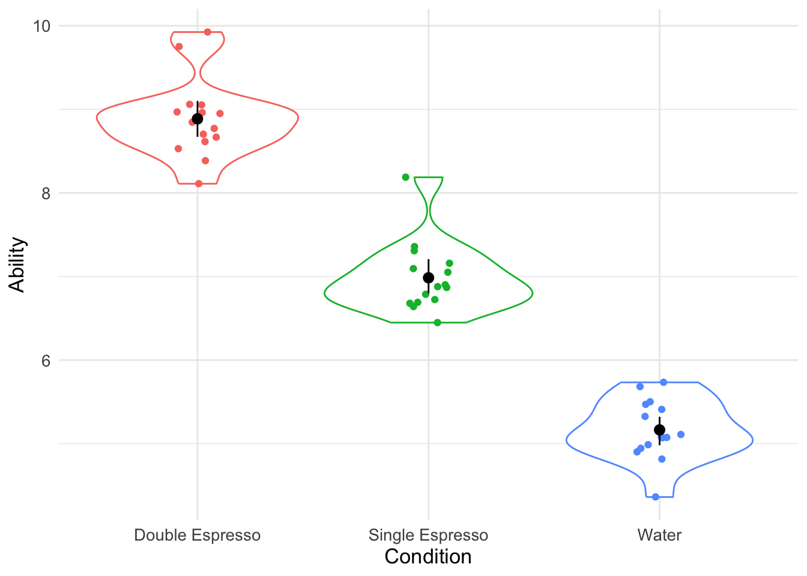
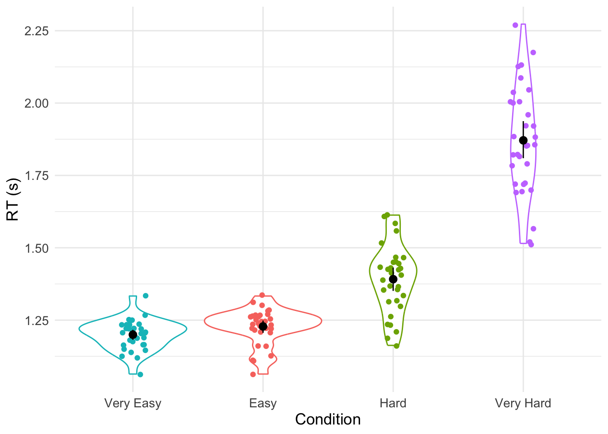
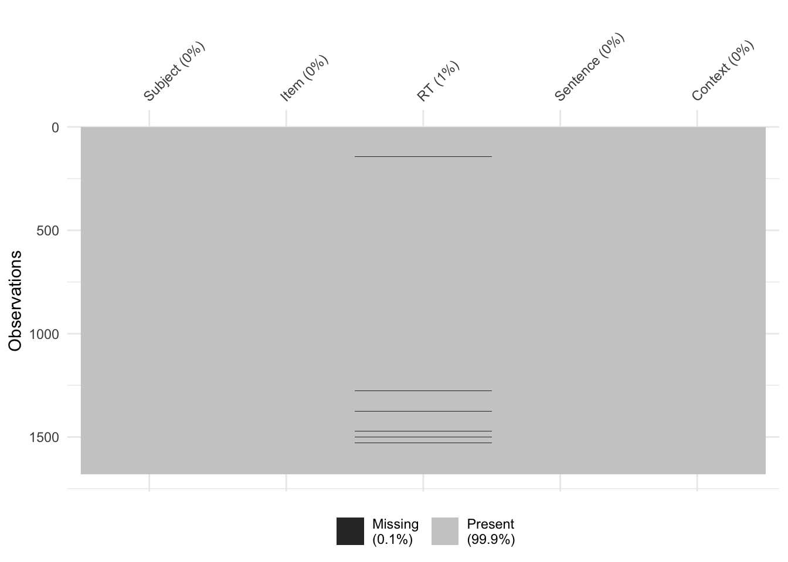
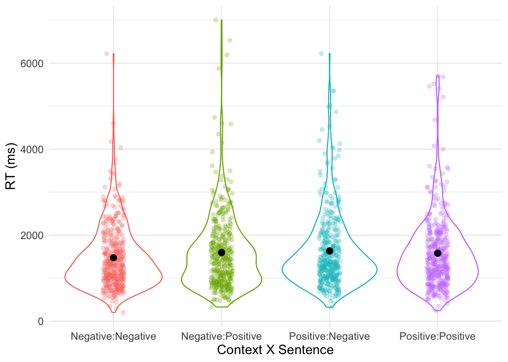

Workshop 8 ANOVA Part 1
In this workshop we will explore Analysis of Variance (ANOVA) in the context of model building in R for between participants designs, repeated measures designs, and factorial designs. You will learn how to use the {afex} package for building models with Type III Sums of Squares, and the {emmeans} package to conduct follow up tests to explore main effects and interactions.
8.1 Overview
We will begin by exploring why we tend to use ANOVA (rather than multiple t-tests), before moving on to some examples of ANOVA for between participants and repeated measures designs.
8.2 Between Participants ANOVA
You will now build your first ANOVA in R for a between participants design.
8.2.1 Loading our Packages
First of all, we need to load the three packages we will be using - they are {tidyverse}, {afex}, and {emmeans}. The {afex} package is the one we use for conducting ANOVA. We use the {emmeans} package for running follow-up tests on the ANOVA model that we will be building.
8.2.2 Reading in our Data
We have 45 participants in a between participants design where we are interested in the effect of beverage consumed on ability on a motor task. Our experimental factor (beverage type) has three levels. These are Water vs. Single Espresso vs. Double Espresso, and Ability is our DV measured on a continuous scale. Let’s read in our data.
my_data <- read_csv("https://raw.githubusercontent.com/george-farmer/PCHN63101/refs/heads/main/cond.csv")
head(my_data)## # A tibble: 6 × 3
## Participant Condition Ability
## <dbl> <chr> <dbl>
## 1 1 Water 4.82
## 2 2 Water 5.41
## 3 3 Water 5.73
## 4 4 Water 4.36
## 5 5 Water 5.47
## 6 6 Water 5.50We see that we have three variables, but our experimental variable Condition is not coded as a factor. Let’s fix that…
## # A tibble: 6 × 3
## Participant Condition Ability
## <dbl> <fct> <dbl>
## 1 1 Water 4.82
## 2 2 Water 5.41
## 3 3 Water 5.73
## 4 4 Water 4.36
## 5 5 Water 5.47
## 6 6 Water 5.508.2.3 Summarising our Data
Let’s work our some summary statistics and build a data visualisation next.
## # A tibble: 3 × 3
## Condition mean sd
## <fct> <dbl> <dbl>
## 1 Double Espresso 8.89 0.467
## 2 Single Espresso 6.99 0.419
## 3 Water 5.17 0.3628.2.4 Visualising our Data
set.seed(1234)
my_data_tidied %>%
ggplot(aes(x = Condition, y = Ability, colour = Condition)) +
geom_violin() +
geom_jitter(width = .1) +
guides(colour = 'none') +
stat_summary(fun.data = "mean_cl_boot", colour = "black") +
theme_minimal() +
theme(text = element_text(size = 13)) 
We have built a visualisation where we have plotted the raw data points using the geom_jitter() function, and the shape of the distribution for each condition using the geom_violin() function. We have also added some summary data in the form of the Mean and Confidence Intervals around the Mean using the stat_summary() function.
8.2.5 Building our ANOVA Model
Let’s now build our model using the aov_ez() function in the {afex} package. We use id to specify which variable in our dataframe identifies participants. dv stands for dependent variable, and we use the between argument to identify the variable containing our between subjects conditions. Lastly we specify the dataframe that aov_ez() should use. We are going to map the output of the aov_ez() function onto a variable I’m calling model. This means that the ANOVA results will be stored in this variable and will allow us to access them later.
## Contrasts set to contr.sum for the following variables: ConditionTo get the output of the ANOVA, we can use the summary() function with our newly created model.
8.2.6 Interpreting the Model Output
## Anova Table (Type 3 tests)
##
## Response: Ability
## num Df den Df MSE F ges Pr(>F)
## Condition 2 42 0.17484 297.05 0.93397 < 2.2e-16 ***
## ---
## Signif. codes: 0 '***' 0.001 '**' 0.01 '*' 0.05 '.' 0.1 ' ' 1The effect size (ges) is generalised eta squared and for designs with more than one factor it can be a useful indicator of how much variance in the dependent variable can be explained by each factor (plus any interactions between factors).
So, we know there is an effect in our model - the F-value is pretty big and the p-value pretty small) but we can’t know what’s driving the difference yet. We need to run some pairwise comparisons using the emmeans() function to tell us what mean(s) differ(s) from what other mean(s).
## $emmeans
## Condition emmean SE df lower.CL upper.CL
## Double Espresso 8.89 0.108 42 8.67 9.10
## Single Espresso 6.99 0.108 42 6.77 7.20
## Water 5.17 0.108 42 4.95 5.38
##
## Confidence level used: 0.95
##
## $contrasts
## contrast estimate SE df t.ratio p.value
## Double Espresso - Single Espresso 1.90 0.153 42 12.453 <.0001
## Double Espresso - Water 3.72 0.153 42 24.372 <.0001
## Single Espresso - Water 1.82 0.153 42 11.920 <.0001
##
## P value adjustment: tukey method for comparing a family of 3 estimatesNote that the default adjustment for multiple comparisons is Tukey’s. We can change that by adding an extra parameter to our model such as adjust = "bonferonni"). In this case, it doesn’t make any difference to our comparisons.
## $emmeans
## Condition emmean SE df lower.CL upper.CL
## Double Espresso 8.89 0.108 42 8.67 9.10
## Single Espresso 6.99 0.108 42 6.77 7.20
## Water 5.17 0.108 42 4.95 5.38
##
## Confidence level used: 0.95
##
## $contrasts
## contrast estimate SE df t.ratio p.value
## Double Espresso - Single Espresso 1.90 0.153 42 12.453 <.0001
## Double Espresso - Water 3.72 0.153 42 24.372 <.0001
## Single Espresso - Water 1.82 0.153 42 11.920 <.0001
##
## P value adjustment: bonferroni method for 3 testsWe found a significant effect of Beverage type (F (2,42) = 297.05, p < .001, generalised η2 = .93). Tukey comparisons revealed that the Water group performed significantly worse than the Single Espresso Group (p < .001), that the Water group performed significantly worse than the Double Espresso Group (p < .001), and that the Single Espresso Group performed significantly worse than the Double Espresso Group (p < .001).
In other words, drinking some coffee improves motor performance relative to drinking water, and drinking a lot of coffee improves motor performance even more.
8.3 Repeated Measures ANOVA
Let’s imagine we have an experiment where we asked 32 participants to learn how to pronounce words of differing levels of complexity - Very Easy, Easy, Hard, and Very Hard. They were presented with these words in an initial exposure phase. After a 30 minute break we tested participants by asking them to say the words out loud when they appeared on a computer screen. We recorded their times in seconds. We want to know whether there is a difference in their response times for each level of word complexity.
8.3.1 Reading in our Data
First we read in the data.
rm_data <- read_csv("https://raw.githubusercontent.com/george-farmer/PCHN63101/refs/heads/main/rm_data.csv")
head(rm_data)## # A tibble: 6 × 3
## Participant Condition RT
## <dbl> <chr> <dbl>
## 1 1 Very Easy 1.25
## 2 2 Very Easy 1.16
## 3 3 Very Easy 1.12
## 4 4 Very Easy 1.33
## 5 5 Very Easy 1.16
## 6 6 Very Easy 1.15We can see from the head() function that Condition isn’t yet coded as a factor. Let’s fix that.
## # A tibble: 6 × 3
## Participant Condition RT
## <dbl> <fct> <dbl>
## 1 1 Very Easy 1.25
## 2 2 Very Easy 1.16
## 3 3 Very Easy 1.12
## 4 4 Very Easy 1.33
## 5 5 Very Easy 1.16
## 6 6 Very Easy 1.158.3.2 Summarising our Data
Let’s generate the Mean and Standard Deviation for each of our four conditions.
## # A tibble: 4 × 3
## Condition mean sd
## <fct> <dbl> <dbl>
## 1 Easy 1.23 0.0610
## 2 Hard 1.39 0.118
## 3 Very Easy 1.20 0.0511
## 4 Very Hard 1.87 0.1878.3.3 Visualising our Data
And visualise the data - note here that I am using the fct_reorder() function to reorder the levels of our factor based on the RT. This can be useful to make our viusalisations more easily interpretable.
rm_data_tidied %>%
ggplot(aes(x = fct_reorder(Condition, RT), y = RT, colour = Condition)) +
geom_violin() +
geom_jitter(width = .1) +
guides(colour = 'none') +
stat_summary(fun.data = "mean_cl_boot", colour = "black") +
theme_minimal() +
theme(text = element_text(size = 13)) +
labs(x = "Condition", y = "RT (s)")
8.3.4 Building our ANOVA Model
We build our ANOVA model in a similar way to before. Except in this case we use the within argument rather than the between argument in order to capture the fact that Condition is a repeated measures factor.
8.3.5 Interpreting the Model Output
We extract the summary of our model in the same way we did for the between participants ANOVA.
##
## Univariate Type III Repeated-Measures ANOVA Assuming Sphericity
##
## Sum Sq num Df Error SS den Df F value Pr(>F)
## (Intercept) 259.07 1 0.50313 31 15962.33 < 2.2e-16 ***
## Condition 9.27 3 1.20624 93 238.23 < 2.2e-16 ***
## ---
## Signif. codes: 0 '***' 0.001 '**' 0.01 '*' 0.05 '.' 0.1 ' ' 1
##
##
## Mauchly Tests for Sphericity
##
## Test statistic p-value
## Condition 0.38404 3.0211e-05
##
##
## Greenhouse-Geisser and Huynh-Feldt Corrections
## for Departure from Sphericity
##
## GG eps Pr(>F[GG])
## Condition 0.65596 < 2.2e-16 ***
## ---
## Signif. codes: 0 '***' 0.001 '**' 0.01 '*' 0.05 '.' 0.1 ' ' 1
##
## HF eps Pr(>F[HF])
## Condition 0.7000534 3.359493e-31With this option, we didn’t get the effect size measure in our measure. We can generate that though by asking for our model to be presented in anova format using the anova() function.
## Anova Table (Type 3 tests)
##
## Response: RT
## num Df den Df MSE F ges Pr(>F)
## Condition 1.9679 61.004 0.019773 238.23 0.84431 < 2.2e-16 ***
## ---
## Signif. codes: 0 '***' 0.001 '**' 0.01 '*' 0.05 '.' 0.1 ' ' 1The effect size is measured by ges and is the recommended effect size measure for repeated measures designs (Bakeman, 2005). Note the dfs in this output are always corrected as if there is a violation of sphericity (violated when the variances of the differences between all possible pairs of within-subject conditions (i.e., levels of the independent variable) are not equal) - to be conservative (and to avoid Type I errors) we might be better off to always choose these corrected dfs.
From this, we can see we have effect of Condition. But we don’t know where the differences lie between the different levels of our factor. So we use the emmeans() function to find that out. Here we will be using the Bonferroni correction for multiple comparisons.
## $emmeans
## Condition emmean SE df lower.CL upper.CL
## Easy 1.23 0.01079 31 1.21 1.25
## Hard 1.39 0.02085 31 1.35 1.43
## Very.Easy 1.20 0.00904 31 1.18 1.22
## Very.Hard 1.87 0.03302 31 1.80 1.94
##
## Confidence level used: 0.95
##
## $contrasts
## contrast estimate SE df t.ratio p.value
## Easy - Hard -0.1633 0.0226 31 -7.225 <.0001
## Easy - Very.Easy 0.0285 0.0143 31 1.986 0.3353
## Easy - Very.Hard -0.6430 0.0338 31 -19.014 <.0001
## Hard - Very.Easy 0.1917 0.0230 31 8.354 <.0001
## Hard - Very.Hard -0.4797 0.0363 31 -13.220 <.0001
## Very.Easy - Very.Hard -0.6715 0.0341 31 -19.710 <.0001
##
## P value adjustment: bonferroni method for 6 testsFrom the above we can see that all conditions differ from all other conditions, apart from the Easy vs. Very Easy comparison which is not significant.
8.4 Factorial ANOVA
Imagine the case where we’re interested in the effect of positive vs negative contexts on how quickly (in milliseconds) people respond to positive vs negative sentences. We think there might be a priming effect (i.e., people are quicker to respond to positive sentences after positive contexts than they are after negative contexts, and vice versa).
So we have two factors (context, sentence), each with two levels (positive, negative). This is what’s know as a full factorial design where every participant takes part in every condition.
8.4.1 Reading in our Data
factorial_data <- read_csv("https://raw.githubusercontent.com/george-farmer/PCHN63101/refs/heads/main/factorial_data.csv")
head(factorial_data)## # A tibble: 6 × 5
## Subject Item RT Sentence Context
## <dbl> <dbl> <dbl> <chr> <chr>
## 1 1 3 1270 Positive Negative
## 2 1 7 739 Positive Negative
## 3 1 11 982 Positive Negative
## 4 1 15 1291 Positive Negative
## 5 1 19 1734 Positive Negative
## 6 1 23 1757 Positive NegativeAgain we see that our two experimental factors are not coded as factors so let’s fix that.
factorial_data_tidied <- factorial_data %>%
mutate(Sentence = factor(Sentence), Context = factor(Context))
head(factorial_data_tidied)## # A tibble: 6 × 5
## Subject Item RT Sentence Context
## <dbl> <dbl> <dbl> <fct> <fct>
## 1 1 3 1270 Positive Negative
## 2 1 7 739 Positive Negative
## 3 1 11 982 Positive Negative
## 4 1 15 1291 Positive Negative
## 5 1 19 1734 Positive Negative
## 6 1 23 1757 Positive Negative8.4.2 Summarising our Data
Let’s generate some summary statistics - note, we specify our two grouping variables in the group_by() function call.
factorial_data_tidied %>%
group_by(Context, Sentence) %>%
summarise(mean_rt = mean(RT), sd_rt = sd(RT))## `summarise()` has grouped output by 'Context'. You can override using the
## `.groups` argument.## # A tibble: 4 × 4
## # Groups: Context [2]
## Context Sentence mean_rt sd_rt
## <fct> <fct> <dbl> <dbl>
## 1 Negative Negative 1474. 729.
## 2 Negative Positive NA NA
## 3 Positive Negative NA NA
## 4 Positive Positive 1579. 841.We have NA for two conditions suggesting we have missing data somewhere in our dataset. We’re going to use a new package now, called {visdat}. It allows us to visualise our dataset using the vis_dat() function and to visualise missing data using the vis_miss() function.

We can see in the above visualisation that we do indeed have some missing data. We need to tell R what we want it to do with that. We can use the na.rm = TRUE parameter to tell it we want missing data to be ignored.
factorial_data_tidied %>%
group_by(Context, Sentence) %>%
summarise(mean_rt = mean(RT, na.rm = TRUE), sd_rt = sd(RT, na.rm = TRUE))## `summarise()` has grouped output by 'Context'. You can override using the
## `.groups` argument.## # A tibble: 4 × 4
## # Groups: Context [2]
## Context Sentence mean_rt sd_rt
## <fct> <fct> <dbl> <dbl>
## 1 Negative Negative 1474. 729.
## 2 Negative Positive 1595. 887.
## 3 Positive Negative 1633. 877.
## 4 Positive Positive 1579. 841.Now we have the summary statistics that we expect.
8.4.3 Visualising our Data
We can use a modification of the ggplot() code we’ve used above to generate our visualisation. Note, I am filtering our the missing data using the filter() function before we start our plot. I am also specifying that we’re wanting to plot a combination of our two factors in the aes() definition using Context:Sentence. There are further things we could modify to improve the look of this graph. Can you figure out ways in which the labelling of the two factors could be clearer?
factorial_data_tidied %>%
filter(!is.na(RT)) %>%
ggplot(aes(x = Context:Sentence, y = RT, colour = Context:Sentence)) +
geom_violin() +
geom_jitter(width = .1, alpha = .25) +
guides(colour = 'none') +
stat_summary(fun.data = "mean_cl_boot", colour = "black") +
theme_minimal() +
theme(text = element_text(size = 13)) +
labs(x = "Context X Sentence", y = "RT (ms)")
8.4.4 Building our ANOVA Model
We have our data in long format where every row is one observation. We haven’t done any data aggregation. The aov_ez() function will do this for us as ANOVA models need to be built over means (not raw data).
The syntax is very similar to what we ran previously, although this time you’ll see we are providing two terms to the within argument. We do this by combining them like this c('Context','Sentence'). This term corresponds to two main effects, aov_ez will also automatically calculate the interaction between them. By setting na.rm to be TRUE, we are telling the analysis to ignore individual trials where there might be missing data - effectively this calculates the condition means over the data that is present (and ignores trials where it is missing). The fun_aggregate = mean argument tells aov_ez() to use means when aggregating, this is the default behaviour anyway, but specifying it here avoids us getting a warning message about it.
model_subjects <- aov_ez(id='Subject',
dv='RT',
within = c('Context','Sentence'),
na.rm = TRUE,
fun_aggregate = mean,
data = factorial_data_tidied)We can generate the output using the anova() function as we did earlier.
## Anova Table (Type 3 tests)
##
## Response: RT
## num Df den Df MSE F ges Pr(>F)
## Context 1 59 90195 3.1767 0.0060231 0.07984 .
## Sentence 1 59 124547 0.6283 0.0016524 0.43114
## Context:Sentence 1 59 93889 4.5967 0.0090449 0.03616 *
## ---
## Signif. codes: 0 '***' 0.001 '**' 0.01 '*' 0.05 '.' 0.1 ' ' 1Let’s now interpret our ANOVA and we will set the error correction adjustment to equal none as only some of the comparisons actually make theoretical sense - these are the ones where we’re comparing like with like - Sentences of the same type (Positive or Negative) preceded by one version of our Context factor vs. the other.
## $emmeans
## Context Sentence emmean SE df lower.CL upper.CL
## Negative Negative 1474 51.1 59 1372 1576
## Positive Negative 1628 58.9 59 1510 1746
## Negative Positive 1595 56.5 59 1482 1708
## Positive Positive 1579 63.9 59 1451 1707
##
## Confidence level used: 0.95
##
## $contrasts
## contrast estimate SE df t.ratio p.value
## Negative Negative - Positive Negative -153.9 50.0 59 -3.075 0.0032
## Negative Negative - Negative Positive -120.9 63.4 59 -1.908 0.0612
## Negative Negative - Positive Positive -105.2 53.5 59 -1.966 0.0540
## Positive Negative - Negative Positive 33.0 65.5 59 0.503 0.6165
## Positive Negative - Positive Positive 48.7 57.1 59 0.852 0.3976
## Negative Positive - Positive Positive 15.7 60.3 59 0.261 0.7953The key comparisons are the Negative Negative - Positive Negative and the Negative Positive - Positive Positive ones. In the first case, we are comparing reaction times to Negative Sentences preceded by Negative vs. Positive Contexts, while in the second we are comparing reaction times to Positive Sentences preceded by Negative vs. Positive Contexts. We can manually correct for multiple comparisons (which in this case is 2) by multiplying the corresponding p-values by 2 (and putting a limit of 1 on the maximum p-value possible). In this case, the first key comparison is significant (p = .0064) while the second is not. We might write up the results like:
We conducted a 2 (Context: Positive vs. Negative) x 2 (Sentence: Positive vs. Negative) repeated measures ANOVA to investigate the influence of Context valence on reaction times to Sentences of Positive or Negative valence. The ANOVA revealed no effect of Sentence (F < 1), no effect of Context (F(1, 59) = 3.18, p = .080, ηG2 = .006), but an interaction between Sentence and Context (F(1, 59) = 4.60, p = .036, ηG2 = .009).
The interaction was interpreted by conducting Bonferroni-corrected pairwise companions. These comparisons revealed that the interaction was driven by Negative Sentences being processed faster in Negative vs. Positive Contexts (1,474 ms. vs. 1,628 ms., t(118) = 3.08, p = .0064) while Positive Sentences were read at similar speeds in Negative vs. Positive Contexts (1,595 ms. vs. 1,579 ms., t(118) = .261, p = 1).
8.5 Your Challenge (do this during the in-person session)
I would now like you to work on the following questions on your own.
8.5.1 Question 1
Our first data file is called ANOVA_data1.csv and can be found here:
https://raw.githubusercontent.com/george-farmer/PCHN63101/refs/heads/main/ANOVA_data1.csv
24 participants responded to a word that was either common (i.e., high lexical frequency) or rare (i.e., low lexical frequency). This is our IV and is coded as ‘high’ vs. low’. Our DV is reaction time and is coded as ‘RT’. Subject number is coded as ‘Subject’. We want to know whether there is a difference between conditions (and if so, where that difference lies). Visualise the data, generate descriptives, and run the appropriate ANOVA to determine whether our independent variable (Condition) has an influence on our dependent variable (RT).
8.5.2 Question 2
Our second data file is called ANOVA_data2.csv and can be found here:
https://raw.githubusercontent.com/george-farmer/PCHN63101/refs/heads/main/ANOVA_data2.csv
These data are also from a reaction time experiment but with a slightly more complex design.48 participants responded to a word that differed in how frequent it was. This factor is between participants and we have four levels coded as ‘very low’, ‘low’, ‘high’, and ‘very high’. Our DV is reaction time and is coded as ‘RT’. Subject number is coded as ‘Subject’. We want to know if there is a difference between our conditions (and if so, where that difference lies).
8.5.3 Question 3
Our third data file is called ANOVA_data3.csv and can be found here:
https://raw.githubusercontent.com/george-farmer/PCHN63101/refs/heads/main/ANOVA_data3.csv
These data are from a 2 x 2 repeated measures reaction time experiment. We were interested in how quickly participants could respond to images that were Large vs. Small and in Colour vs. Black & White. We expect that Large Colour images will be responded to more quickly than Small B & W images. We’re not sure about Small Colour images and Large B & W images. We measured the response times of 24 participants responding to an image in each of these four conditions. We want to determine if there is a difference between our conditions (and if so, where that difference lies).
8.5.4 Question 4
Our fourth data file is called ANOVA_data4.csv and can be found here:
https://raw.githubusercontent.com/george-farmer/PCHN63101/refs/heads/main/ANOVA_data4.csv
These data are from a 2 x 2 x 3 mixed design experiment where we measured people’s response times to maths questions that were either Easy or Hard, and to which they had to respond either under Time Pressure or under No Time Pressure. These are our first two factors and are repeated measures (i.e., everyone saw all 4 conditions). Our third factor is between subjects and corresponds to whether our participants were in one of three groups. The groups were Psychology Students, Maths Students, and Arts Students. We want to know where a participant’s performance on the maths questions under time pressure vs. not under time pressure is influenced by which one of these three groups they belong to. Conduct the appropriate ANOVA to answer this question. Remember to start off with some data visualisation(s).
8.6 Answers
8.6.1 Question 1
The ANOVA should reveal an effect of Condition with F(1, 22) = 91.217. As there are just two levels to our factor, we don’t need to run any follow up tests to know what’s driving the effect. By looking at the descriptive statistics, we see that RT is 865 for our high condition and 1178 for our low condition.
8.6.2 Question 2
The ANOVA should reveal an effect of Condition with F(3, 44) = 203.21. To interpret this further we need to run follow up comparisons. Using the Bonferroni correction these should indicate that every level of Condition differs from every other level.
8.6.3 Question 3
The ANOVA should reveal a main effect of Size (F(1, 23) = 198.97), a main effect of Colour (F(1, 23) = 524.27), and an interaction between these two factors (F(1, 23) = 11.08). To interpret this interaction further we need to run follow up comparisons. Using the Bonferroni correction these should indicate that every level of Condition differs from every other level.
8.6.4 Question 4
This question is slightly trickier than the ones we’ve looked at so far. After you’ve built your ANOVA, you’ll discover a significant 3-way interaction (F(2, 69) = 4.63). You’ll need to break this down further - one possible approach would be to look at the interaction between Difficulty and Time Pressure separately for each level of our between group factor. In other words, you’d build one 2 x 2 ANOVA model for each of your Student Groups. If you do this, you’ll see that the 2 x 2 interaction is not significant for the Arts group, nor the Maths group, but the interaction is significant for the Psychology group (F(1, 23) = 11.08)) - as too are the two main effects of Difficulty and Time Pressure. But as these two factors interact, the meaning in our data is in the interaction term (not just these two main effects).
So, the 3-way interaction was telling us that the 2-way interaction differed for at least one of our Groups (relative to the other Groups). We need to examine this 2-way interaction further for our Psychology group by conducting pairwise comparisons, exactly as you’ve done above. This will reveal that for our Psychology group, each condition differs significantly from the other conditions. It means that for Psychology students, the Hard problems take long under Time Pressure vs. under No Time Pressure, and the Easy problems take longer under Time Pressure vs. under No Time Pressure (but neither of these are as long as for Hard problems).